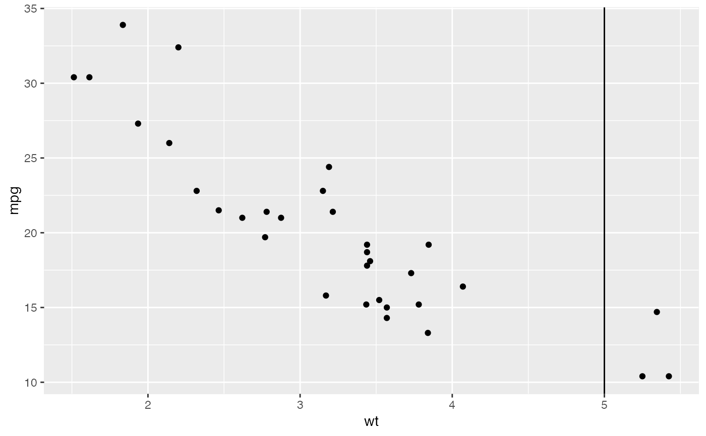
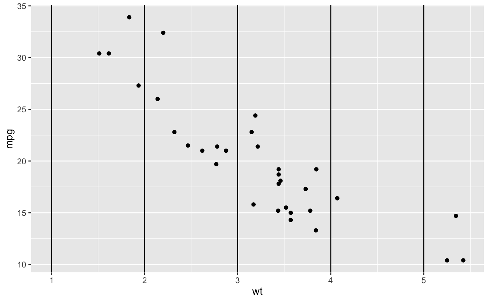
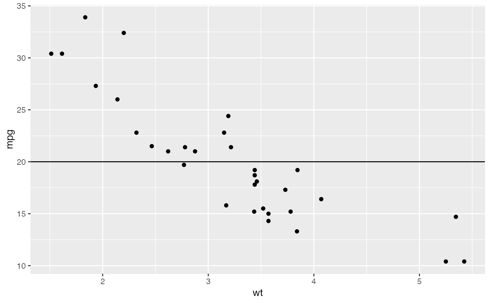
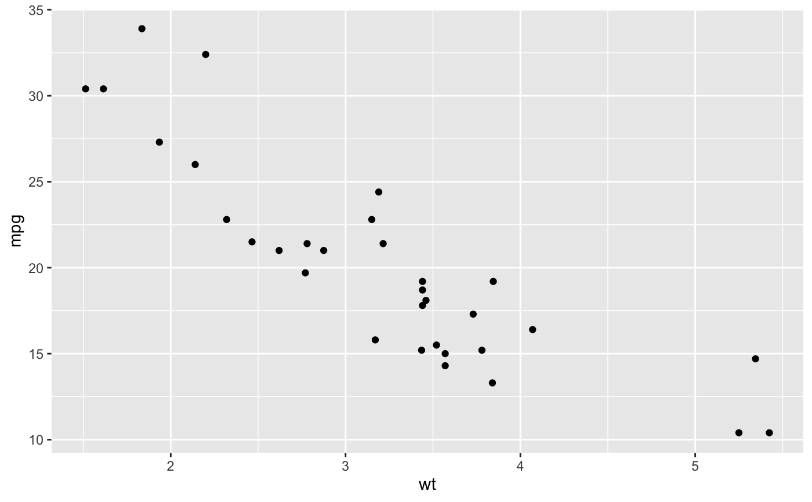
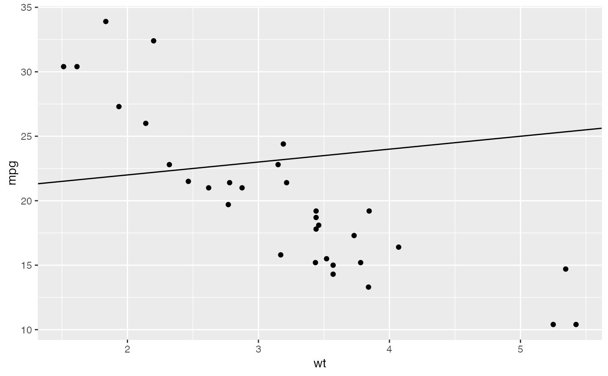
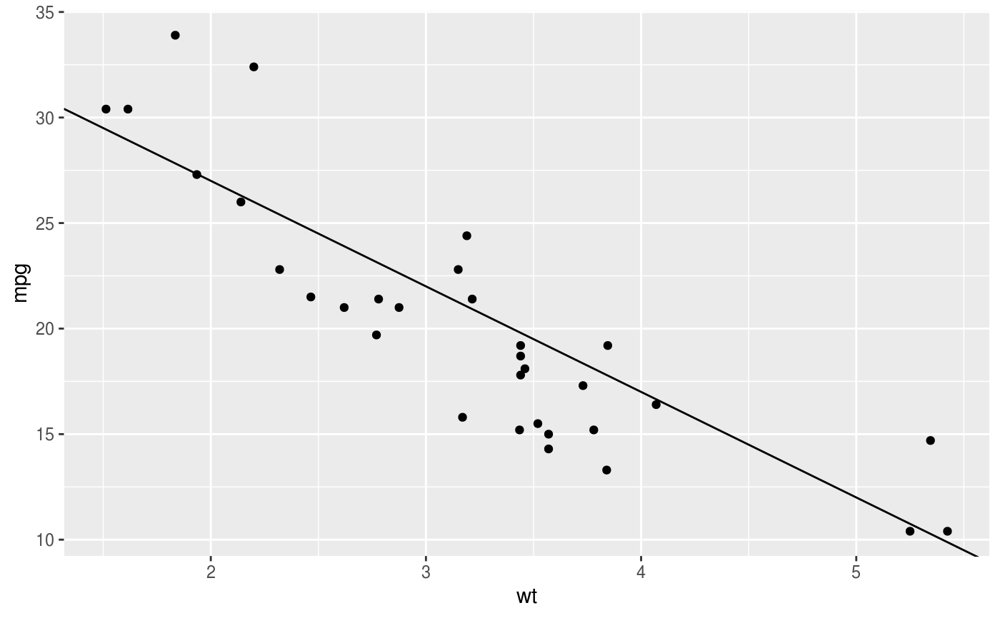
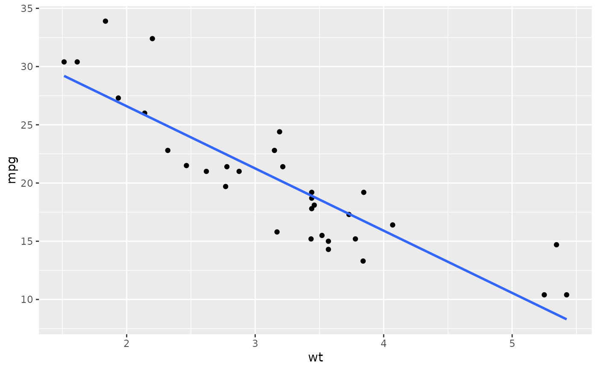
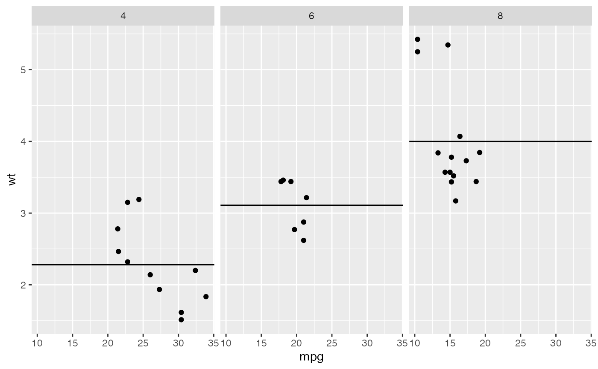
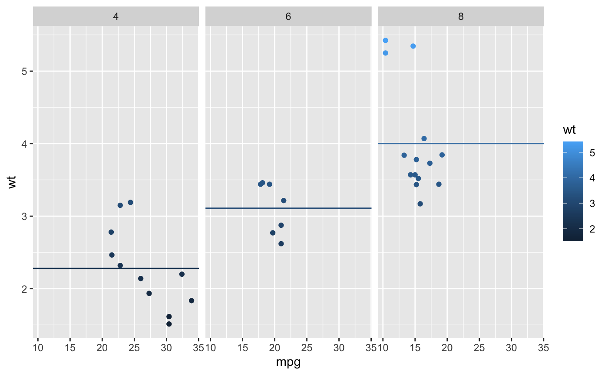

Reference lines: horizontal, vertical, and diagonal
Source:R/geom-abline.r, R/geom-hline.r, R/geom-vline.r
geom_abline.RdThese geoms add reference lines (sometimes called rules) to a plot, either horizontal, vertical, or diagonal (specified by slope and intercept). These are useful for annotating plots.
Usage
geom_abline(
mapping = NULL,
data = NULL,
...,
slope,
intercept,
na.rm = FALSE,
show.legend = NA
)
geom_hline(
mapping = NULL,
data = NULL,
...,
yintercept,
na.rm = FALSE,
show.legend = NA
)
geom_vline(
mapping = NULL,
data = NULL,
...,
xintercept,
na.rm = FALSE,
show.legend = NA
)Arguments
- mapping
- data
The data to be displayed in this layer. There are three options:
If
NULL, the default, the data is inherited from the plot data as specified in the call toggplot().A
data.frame, or other object, will override the plot data. All objects will be fortified to produce a data frame. Seefortify()for which variables will be created.A
functionwill be called with a single argument, the plot data. The return value must be adata.frame, and will be used as the layer data. Afunctioncan be created from aformula(e.g.~ head(.x, 10)).- ...
Other arguments passed on to
layer(). These are often aesthetics, used to set an aesthetic to a fixed value, likecolour = "red"orsize = 3. They may also be parameters to the paired geom/stat.- na.rm
If
FALSE, the default, missing values are removed with a warning. IfTRUE, missing values are silently removed.- show.legend
logical. Should this layer be included in the legends?
NA, the default, includes if any aesthetics are mapped.FALSEnever includes, andTRUEalways includes. It can also be a named logical vector to finely select the aesthetics to display.- xintercept, yintercept, slope, intercept
Parameters that control the position of the line. If these are set,
data,mappingandshow.legendare overridden.
Details
These geoms act slightly differently from other geoms. You can supply the
parameters in two ways: either as arguments to the layer function,
or via aesthetics. If you use arguments, e.g.
geom_abline(intercept = 0, slope = 1), then behind the scenes
the geom makes a new data frame containing just the data you've supplied.
That means that the lines will be the same in all facets; if you want them
to vary across facets, construct the data frame yourself and use aesthetics.
Unlike most other geoms, these geoms do not inherit aesthetics from the plot default, because they do not understand x and y aesthetics which are commonly set in the plot. They also do not affect the x and y scales.
Aesthetics
These geoms are drawn using with geom_line() so support the
same aesthetics: alpha, colour, linetype and
size. They also each have aesthetics that control the position of
the line:
geom_vline():xinterceptgeom_hline():yinterceptgeom_abline():slopeandintercept
See also
See geom_segment() for a more general approach to
adding straight line segments to a plot.
Examples
p <- ggplot(mtcars, aes(wt, mpg)) + geom_point()
# Fixed values
p + geom_vline(xintercept = 5)

p + geom_vline(xintercept = 1:5)

p + geom_hline(yintercept = 20)

p + geom_abline() # Can't see it - outside the range of the data

p + geom_abline(intercept = 20)

# Calculate slope and intercept of line of best fit
coef(lm(mpg ~ wt, data = mtcars))
#> (Intercept) wt
#> 37.285126 -5.344472
p + geom_abline(intercept = 37, slope = -5)

# But this is easier to do with geom_smooth:
p + geom_smooth(method = "lm", se = FALSE)
#> `geom_smooth()` using formula = 'y ~ x'

# To show different lines in different facets, use aesthetics
p <- ggplot(mtcars, aes(mpg, wt)) +
geom_point() +
facet_wrap(~ cyl)
mean_wt <- data.frame(cyl = c(4, 6, 8), wt = c(2.28, 3.11, 4.00))
p + geom_hline(aes(yintercept = wt), mean_wt)

# You can also control other aesthetics
ggplot(mtcars, aes(mpg, wt, colour = wt)) +
geom_point() +
geom_hline(aes(yintercept = wt, colour = wt), mean_wt) +
facet_wrap(~ cyl)
